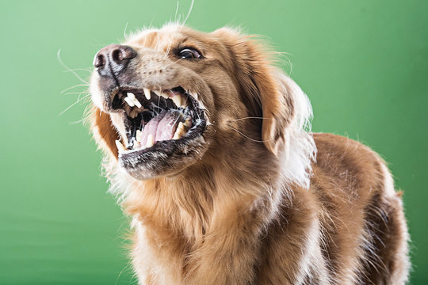

What is Rabies?
Rabies is a serious viral infection that attacks the brain and nervous system. It is typically spread through bites from infected animals, and once symptoms appear, it is almost always fatal.
Causes
- Bite or scratch from an infected animal
- Contact with saliva through wounds or mucous membranes
- Rare airborne transmission in specific environments
Symptoms
- Fever, headache, and general weakness
- Pain or tingling at the wound site
- Hallucinations, confusion, hydrophobia
- Paralysis, coma, and death
Prevention
- Vaccinate pets and livestock
- Stay away from wild or stray animals
- Educate the community about rabies risks
- Seek medical help immediately after any animal bite
Treatment
Rabies is preventable with immediate action:
- Wash the wound with soap and water
- Get rabies immunoglobulin (RIG)
- Complete a full rabies vaccination series